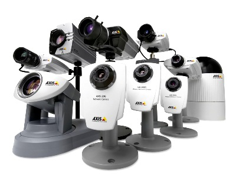
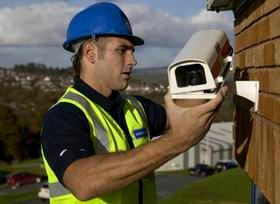

Самостоятельная установка системы видеонаблюдения.

Современное оборудование для организации систем видеонаблюдения с каждым годом унифицируется все больше, что положительно повлияло на возможность собственноручно собрать такую систему любому человеку,
не имеющему профессиональных навыков в этой области. При самостоятельной установке системы видеонаблюдения появляется возможность сэкономить на работе специалиста и одновременно создать такую систему, которая
будет полностью соответствовать вашим требованиям. Ещё несколько лет назад для установки систем видеонаблюдения необходимо было знать огромное количество тонкостей и поэтому монтажом, как правило, занимались
специализирующиеся на этом компании.
Нужно ли говорить о том, что их услуги стоили недёшево и далеко не каждый мог позволить себе такие расходы.
Сегодня на рынке имеются готовые комплекты видеонаблюдения, предназначенные для непрофессиональных пользователей. Установка и настройка такого оборудования не отличается сложностью, что позволяет воспользоваться
им любому человеку независимо от его уровня подготовки. В составе такого готового комплекта имеются схемы и иллюстрации, позволяющие в подробностях понять принцип работы данной системы. Понятно, что подобная система
видеонаблюдения не сможет обеспечить эффективность наблюдения на самом высоком уровне. Всё зависит от ваших требований к данной системе. Нередко, для достижения максимальной
эффективности работы системы видеонаблюдения, некоторые её компоненты приходится подбирать отдельно.
Для самостоятельной установки готового комплекта видеонаблюдения
будут достаточными начальные навыки крепления деталей подобной системы к различным поверхностям. В зависимости от объекта, на котором будет произведена установка, поверхность может быть бетонной, металлической,
деревянной, кирпичной и т.д. Также не лишними при монтаже окажутся элементарные знания и навыки, связанные с методами проводки кабельных линий.
Для подключения и правильной настройки системы потребуются навыки работы с интерфейсом компьютерных систем и умение ориентироваться в меню систем видеонаблюдения. К числу необходимых знаний также следует
отнести и технику безопасности, которую должен знать тот, кто будет устанавливать систему. Подходить к данной работе следует максимально тщательно и осторожно. При некачественной установке подобного оборудования
с большой долей вероятности во время использования данной системы будут возникать сбои и неполадки, а в худшем случае может произойти отказ всей системы. Для того чтобы поподробней разобраться в данном вопросе можно,
немного углубиться в изучение специализированной литературы. Как правило, в ней отображаются все тонкости монтажа систем видеонаблюдения, которые следует учитывать для того, что бы получить
качественный результат. Однако некоторые навыки можно приобрести только непосредственно в процессе подобной работы.

Подведём итог. Если вы никогда не занимались монтажом систем видеонаблюдения и перед вами встала такая задача, то следует обратить внимание на то, каким требованиям она должна соответствовать. В случае
организации небольшой системы, от которой не требуются высокие качественные параметры, вы сможете выполнить монтаж самостоятельно, используя при этом современное оборудование. Если же предполагается установка большой системы,
требования к которой являются довольно жёсткими, то в этом случае лучше воспользоваться услугами специалистов в Бобруйске. Купить
компьютеры в Бобруйске с cooler.by теперь очень просто, доставка в Бобруйск всего 10у.е..
Читайте также:
Как выбрать и как правильно пользоваться веб камерой.
Автомобильные видеорегистраторы.
Следующая статья:
Оптический волоконный кабель.